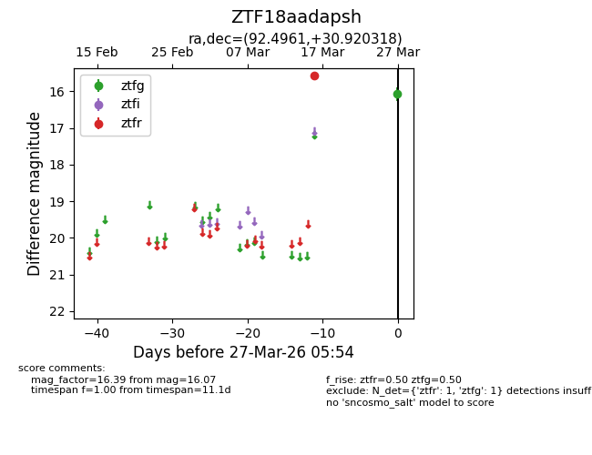
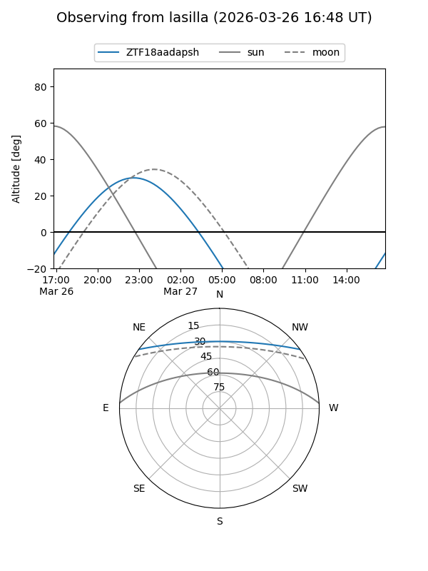
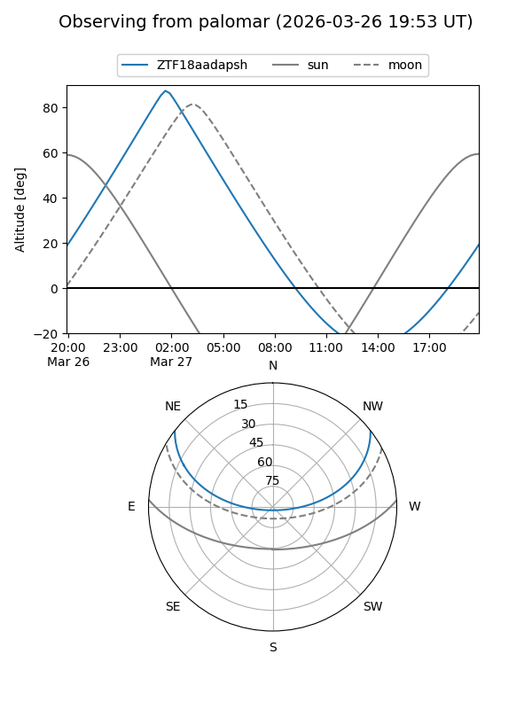

ZTF18aadapsh
Target ZTF18aadapsh at 2026-03-27 05:57
Aliases and brokers:
FINK: link
Lasair: link
ALeRCE: link
alt names
ZTF18aadapsh (ztf,fink_ztf)
Coordinates:
equatorial (ra, dec) = 92.4961,+30.92032
equatorial (HMS+DMS) = 06:09:59.05,+30:55:13.14
galactic (l, b) = (180.9140,+5.56399)
Flags:
Photometry:
last ztfg=16.07, ztfr=15.57
1 ztfg, 1 ztfr detections
Lightcurve

Visibility


Additional plots